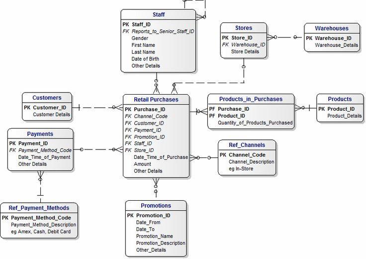
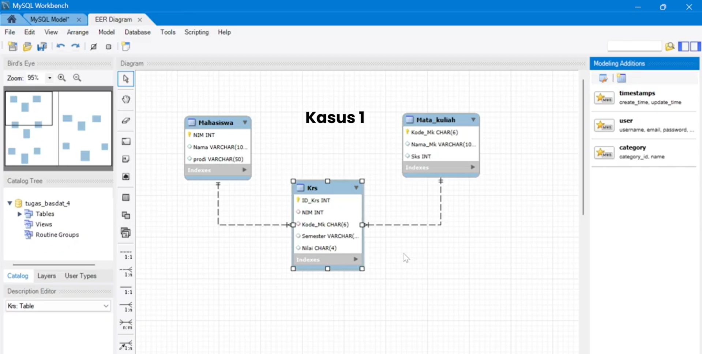

Kumpulan Materi
Materi 1
Apa yang Anda harapkan dari MK Basis Data?
29 September 2025 - NBLogMateri 2
Apa itu Basis Data?
29 September 2025 - NBLog
Materi 3
Apa itu Konseptual Database?
29 September 2025 - NBLogMateri 4
Apa itu Physical Model?
29 September 2025 - NBLogMateri 5
Tatacara Installasi 1 DBMS (mysql)
7 Oktober 2025 - NBLog
Materi 6
Apa itu attribute, Entitas dan Relasi dalam ERD?
7 Oktober 2025 - NBLog
Materi 7
Apa itu PrimaryKey, Foreign Key dan Candidate Key. berikan masing-masih 5 contoh pada penerapan ERD
12 Oktober 2025 - NBLog Materi 8
Apa itu relation pada ERD, Mengapa many-to-many tidak baik digunakan pada ERD
12 Oktober 2025 - NBLogMateri 9
Buat ERD tentang Intersection sebanyak 5 kasus
20 Oktober 2025 - NBLog Materi 10
Apa itu normalisasi pada ERD?
20 Oktober 2025 - NBLog